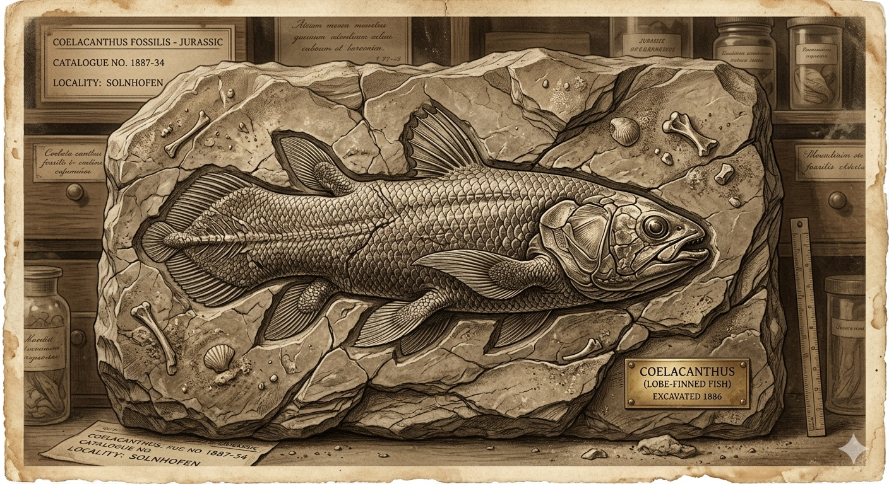

הצילקנת
המאובן החי שחזר מהכחדה של 66 מיליון שנה
מחקר אטימולוגי: מקור השמות
השם המדעי הטקסונומי: Latimeria chalumnae
השם המדעי של המין שהתגלה ב-1938 הוא מחווה היסטורית כפולה - למגלה האמיצה ולמקום התגלית:
- Latimeria: שם הסוג הוענק כמחווה למרג'ורי קורטני-לטימר (Marjorie Courtenay-Latimer, 1907–2004), אוצרת המוזיאון הצעירה שזיהתה את הדג המוזר בתוך ערימת שלל דיג והצילה אותו למען המדע.
- chalumnae: שם המין מתייחס לנהר חלומנה (Chalumna River) שבאוקיינוס ההודי, מול חופי דרום אפריקה, שם נלכד הפרט החי הראשון.
שם הסדרה (והשם הנפוץ): Coelacanth
- Koilos (יוונית): פירושו "נבוב" או "חלול".
- Akantha (יוונית): פירושו "עוקץ", "קוץ" או "עמוד שדרה".
משמעות כוללת: "בעל עמוד השדרה החלול".
השם הפולקלוריסטי (קומורו): Gombessa
- גומבסה: אמנם המדע האירופאי נדהם ב-1938, אך דייגי איי קומורו הכירו את הדג הזה מאז ומעולם. הם כינו אותו "גומבסה" (דג חסר ערך), מכיוון שבשרו מכיל שעווה ושומנים המקשים מאוד על עיכולו, והוא לא ראוי למאכל.
תגלית המאה: פגישה עם רוח רפאים מהעבר
עד שנת 1938, הקהילה המדעית קבעה נחרצות: הצילקנתים נכחדו בסוף תור הקרטיקון, לפני 66 מיליון שנה, יחד עם הדינוזאורים. הם הוכרו רק כמאובנים המוטבעים בסלעים קדומים.
ב-22 בדצמבר 1938, קפטן ספינת דיג בשם הנדריק גוסן (Hendrik Goosen) חזר לנמל בדרום אפריקה. הוא קרא לאוצרת המוזיאון המקומית, מרג'ורי קורטני-לטימר, לראות דג כחול ויפהפה ומוזר שנתפס ברשתותיו. לטימר, שמעולם לא ראתה דבר כזה, שלחה איור מפורט של הדג לכימאי והאיכתיולוג המפורסם פרופ' ג'יי. אל. בי. סמית' (J.L.B. Smith, 1892–1968). כשסמית' ראה את האיור, הוא תיאר את הרגע מאוחר יותר: "לא הייתי מופתע יותר אילו הייתי רואה דינוזאור הולך ברחוב". תגלית "המאובן החי" הסעירה את עולם המדע מקצה לקצה.
המיתוס המדעי מול המציאות האבולוציונית
המיתוס: במקרה זה, הפולקלור לא היה אגדת ילידים, אלא ה"דוגמה" המדעית הנוקשה שהניחה שמין לא יכול לשרוד בסתר 66 מיליון שנה מבלי להשאיר אף מאובן מתקופות מאוחרות יותר.
המציאות: הצילקנת שרד במעמקי האוקיינוס (בעומקים של כ-200 מטרים), באזורים יציבים גיאולוגית (מערות תת-ימיות), שם הסביבה כמעט לא השתנתה מאז עידן הדינוזאורים.
מאפיינים ביולוגיים: החוליה המקשרת
- סנפירים בשרניים (Lobe-finned): שלא כמו דגים רגילים בעלי סנפירי קרניים, לצילקנת יש סנפירים המחוברים לגוף על ידי גבעולים בשרניים ושריריים בעלי מבנה עצמות דומה לרגליים של בעלי ארבע רגליים (טטרפודים). הם נעים במים בתנועה המזכירה סוס דוהר!
- מפרק גולגולת ייחודי: הוא היצור החי היחיד בעל מפרק תוך-גולגולתי המאפשר לו להרים באופן עצמאי לחלוטין את חלקה העליון של הגולגולת (ולא רק לפתוח את הלסת התחתונה) כדי לשאוב טרף.
- מיתר הגב (Notochord): במקום עמוד שדרה מלא עשוי עצם, יש לו צינור חלול עשוי סחוס ומלא בנוזל (מכאן שמו האטימולוגי).
- איבר רוסטרלי: איבר חישה אלקטרומגנטי הנמצא בחרטומו, המסייע לו לאתר חתימות חשמליות של טרף בחשכה המוחלטת של מערות המעמקים.
תיעוד חזותי (לחץ להגדלה)

המיתוס המדעי: הכחדה (מאובן בלבד)

המציאות: "מאובן חי" במעמקים